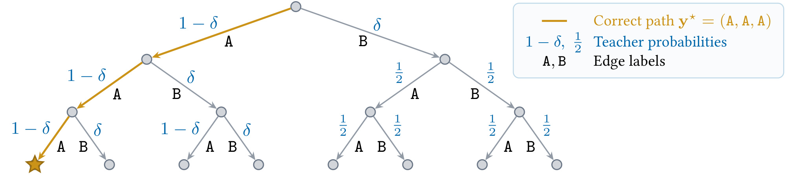
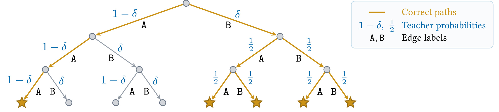
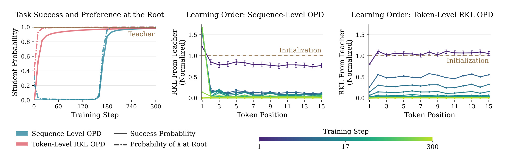
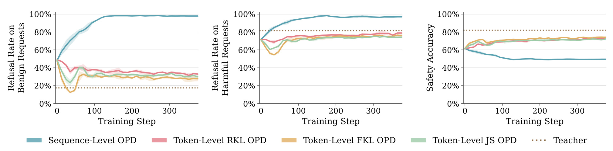
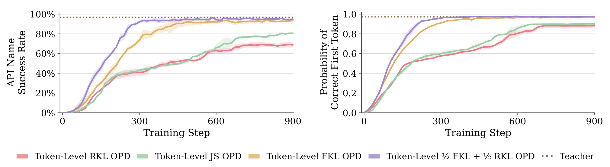
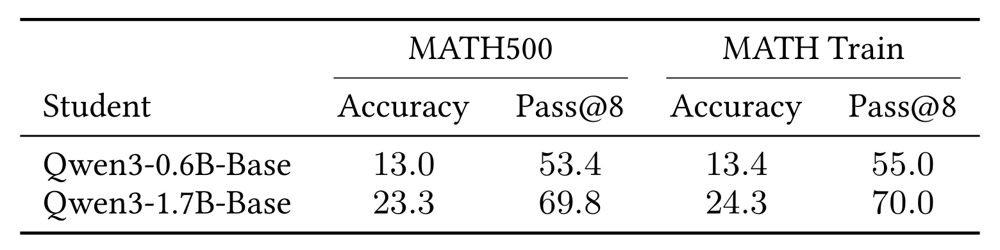
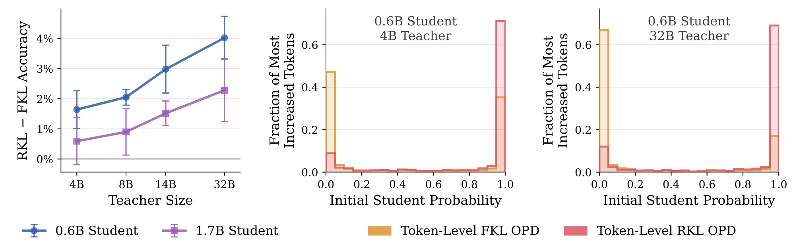
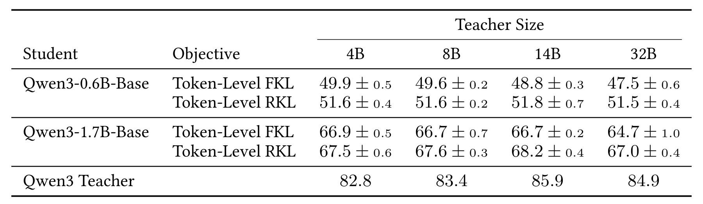
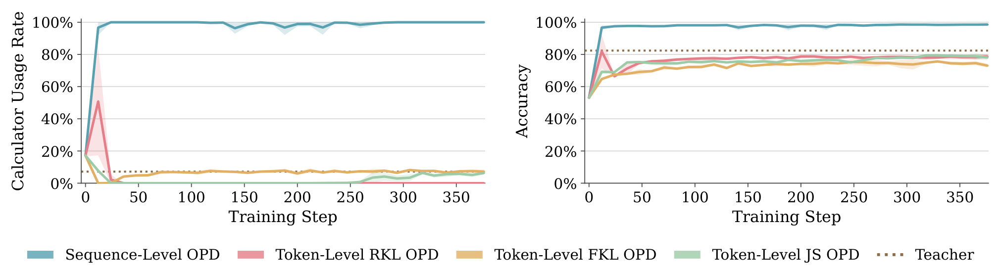

策略内蒸馏目标如何改变 token 学习顺序与速度
论文为 Which Tokens, in What Order, and How Fast? A Theoretical Analysis of On-Policy Distillation Objectives。作者为 Hubert Strauss、Liam Fowl 与 Noam Razin，来自普林斯顿大学和巴伊兰大学。首版于北京时间 2026 年 11 月 18 日提交，出现在 arXiv 11 月 19 日公告。 arXiv:2611.23397 · 作者代码
同一教师为学生自己生成的轨迹提供监督，序列级反向 KL、逐 token 反向 KL 和逐 token 前向 KL 会怎样改写学生的行为？论文把训练目标的粒度和所选散度分别分析，再用树导航、安全判分、代码补全、数学和算术工具实验检查不同分歧来自哪里。
策略内蒸馏已被广泛用于后训练，但该用整个序列还是逐 token 对齐、该用哪一种散度，仍缺少能解释学习优先级、先后顺序与速度的理论依据。
1. 背景和问题
1.1 从教师轨迹切换至学生轨迹
自回归语言模型在每一步接收提示、已经生成的前缀，再给下一 token 分配概率。传统离策略蒸馏可以提前生成教师轨迹，训练学生在这些前缀上选择教师使用的 token。如学生生成时早一步选错，后续读到的上下文可能从未出现在教师轨迹中，局部监督只在原前缀下有意义。策略内蒸馏每轮先让学生生成，再让教师在相同上下文上提供概率，这样教师能评估学生实际会走到的状态。处于图结构时可把输出前缀看作节点，下一 token 是出边，教师分布定义该节点的行为参考。训练会不断改变学生访问各节点的频率；节点上的监督影响该处行为，也可能通过概率变化改变下一轮的数据组成。
沿用学生采样还留下两个决策。决定按整个序列还是逐 token 计算，是在选择哪里承担误差。完整路径的概率由各步相乘，路径损失把未来每一步的偏差反馈给早期分叉。逐 token 损失仍从学生采样，但在对一个已到达节点求导时固定这次轨迹的来源，只比较当下两个模型的下一步条件分布。决定采用前向、反向 KL 或 JS，则是在选择同一节点上如何对各个候选分配梯度。若教师希望学生学会一个目前极少生成的版本号、接口或代码标识，教师在相同前缀上给它高概率，学生当前给它极低概率，两种散度可能给出非常不同的更新幅度。位置粒度与散度各自作用于不同变量，实践中如果把它们绑成一个开关，便难以判断是哪一项强化或减弱了目标路径。
把训练损失的数值与任务结果分开也很重要。一个对教师的整段亏损较小的分支，可能只是两模型在此分支以后都用相似的模板。模板在工具任务中可以是可正确执行的简明路径，在问答任务中也可能是没有解决用户请求的短回复。教师选择某项操作的频率同样不是衡量它在每条任务上是否可行的真值。蒸馏目标没有直接读取任务正确集合，只能通过教师的条件分布和学生的生成状态间接学习。因此应明确偏好对齐、任务完成、成本和不当行为四类量，先看看任务本身允许哪些正确输出，再评价蒸馏后对齐度移动有没有带来行为变化。
对生成式推荐，分层 SID、工具调用或其他结构化输出也形成具有分叉的前缀树。早期码位若落到错误目录分区，后面每个合法码位都填得很顺也未必能覆盖目标物品。目录维护引入的新码值又可能很少出现在学生先验中，导致即使教师整条正确路径有高置信，学习仍取决于根节点能否访问以及低概率出边能否得到明显梯度。要区分这两类问题，可以看各层命中和候选支持，还可以跟踪同一前缀下学生的初始概率和蒸馏更新后概率质量，避免把相似的整体召回变化归结为同一个训练原因。
1.2 树形任务定位策略偏差
作者构造了一类结构高度可控的任务，把结束位置、期望解和教师概率都明确给定。由此能在固定训练目标下跟踪首 token 的学习，避免真实指令数据的多种写法、模板差异及答案裁判影响机制。树内每个状态只允许选 A 或 B，每条轨迹长度相同，教师在不同子树的条件分布可以独立指定。学生开始时各个节点都给 A 和 B 同样概率；从根节点采样到每条路径时，局部模型在路径内读到相应前缀。论文先把最左叶子规定为唯一正确结果，随后保留完全相同的教师、学生及训练操作，只改变结果的判定集合。

图 1 用深度三示例表示真正分析中任意深度的树。金色箭头连续穿过左边 A 边，终点星号才是唯一被接受的答案。教师在根和根的左子树中均用接近一的概率选 A，这使其完整金线路径的概率较高；右子树中每条出边都是一半。均匀学生一开始并不擅长沿着左子树持续选择 A，而它在任意右子树节点处已和教师一致。训练端若将后续反向 KL 纳入第一步梯度，右路分支可能因后续一致而被提升。图例中的小概率德尔塔是教师配置，由树深控制，并非学生探索率。评价时则需要同时看根选 A 的概率和整条 A 链的联合概率，根部改善可能先出现，其他位置误差仍会让整条路径概率较低。这个设计令两种目标产生可分辨的轨迹，读图时要先锁定教师在左、右子树的完整条件，再判断某条梯度方向是否偏离数据本身。对于使用目录约束的生成模型，实验时还需保留被排除路径的数量，而此理论树的可选边完全公开且不随推理引擎更新。

图 6 仍有左侧金线和对应星号，但右子树四个叶子也有星号，标记所有首步选 B 的续写均正确。教师概率和树结构与图 1 相同，左侧金线仍是教师主要选择，右侧只是其可接受的备用解。学生在右子树内与教师初始一致，序列级更新使早期向右的倾向在这个评价中立刻增加正确率。两图并列明确了何以相同现象会产生相反任务结论：模型概率和训练梯度可以逐步相同，变的是评估者对不同叶子的接受规则。这也意味着只报告训练集上平均的蒸馏距离，无法知道改写根选择究竟是收益还是问题。附录没有给目标函数添加“走右边”的奖励；即便临时满意地选择了右子树，继续按反向 KL 逼近教师也可能把质量重新放回左侧。因此应将早期达到成功阈值与收敛状态区分开。把这组反例迁到推荐实验时，单目标下一个物品与接受多个同等相关物品也是两套不同的成功条件。比较前应冻结二者的标签边界，同时跟踪候选覆盖和目标位次，方便识别代理指标的结构偏好。
2. 方法
2.1 学生采样与两类训练目标
论文设定词表有限，教师对所有完整输出序列为正概率；理论推导将输出长度固定为 $L$。对某个提示，学生策略给一个前缀以访问概率，下一步预测又以这个前缀为条件。完整语句、局部候选和前缀访问是三个层次。式（1）先定义完整语句概率，随后式（2）和式（3）共享同样的生成结构，区别出现在怎样对概率求导。
符号解释：$x$ 是输入提示，$y$ 是整个生成结果，$y_\ell$ 是第 $\ell$ 个 token，$y_{<\ell}$ 是此前前缀，$\theta$ 是学生参数。条件概率由该前缀下的 logits 经 softmax 得到。乘积表明第一步概率一旦逼近零，所有走这一步的后缀都会失去访问权重，即使后段条件概率已有改善也未必回到高整体成功率。
符号解释：$\pi_T$ 是教师的完整序列分布，$L_{\mathrm{seq}}$ 是相对于该分布的反向 KL。学生采样确定轨迹，教师在该轨迹上评分；期望外部的采样分布本身依赖学生参数。对这个期望使用策略梯度时，由整段对数比调节采样路径的更新。若使用从当前 token 开始累加的后续对数比，其期望下省掉此前已确定的项，相当于让当前选择接收未来差异。是否按长度归一、是否做梯度截断是实现时额外的决定。
符号解释：$D$ 是两种下一 token 分布的散度，作者测试前向 KL、反向 KL 和 JS，$\mathrm{sg}$ 表示由当前学生生成但这项采样不参加梯度。一次更新仍能向所有被访问的位置传播，下一轮再由更新后的学生采样。逐 token 反向 KL 与序列级目标在写期望时可以有相同的损失分解，但采样是否停止梯度决定两边的训练动态是否一致。若实现时缓存学生输出、再用多轮训练复用，轨迹逐渐过时会引入本文未专门量化的因素。
2.2 序列粒度与未来一致性偏置
作者把参数梯度拆成 logits 对参数的 Jacobian 与每个前缀对应的 logits 梯度。在同一个模型状态上，参数结构对各个目标是共享的，比较局部梯度便能揭示差异。对于前缀 $c$，令 $p_v$ 和 $q_v$ 分别是教师与学生给候选 $v$ 的条件概率，$w$ 是学生到此前缀的概率。$K_c$ 表示从 $c$ 开始两模型后续完整分布的反向 KL，$K_v$ 则表示先追加 $v$ 的反向 KL。引理 1 得到序列级目标如下。
符号解释：$z_v$ 是前缀处 token $v$ 的学生 logit，$K_v$ 是选这个 token 后的续写差异，$K_c$ 为同一父节点共享的续写差异。若教师在此节点更青睐 $v$，局部概率比会推动它向上。若 $v$ 之后的路径已经较一致，括号中的负续写罚项更小，因而也能提供升高 logit 的动机。即使当前局部概率恰好等于教师，只要不同候选之后的差异不等，梯度仍可改变当前分布。越靠近结尾，后续差异越少；这使某些任务里晚位置较早对齐，最终早位置才逐步匹配。
符号解释：$V$ 是词表，$a$ 遍历所有候选，$\widetilde p$ 是把教师概率按候选后续 KL 的负指数倾斜并重新归一化的有效教师。命题 1 只在对右边的梯度计算时将该有效教师视作常量；如果也对其中的学生续写概率求导，等价不成立。只有所有候选的续写差异相同，倾斜才不会改变教师的下一 token 分布。任务对最终输出的判定未进入这条梯度。 因而未来一致性倾斜可以把学生引向容易完成的有效路径，也可能吸引它进入一条没有任务收益的支路。
符号解释：两项是定理 1 条件下达到同一成功率阈值所需更新步数的下界与上界，$L$ 为树深。条件包括独立于其他前缀的可训练 logits、均匀初始化、无采样噪声的梯度下降、固定步长 $0<\eta\le2$，以及 $0<\epsilon<1/8$ 下充分大的深度。教师错误根边概率为 $e^{-L}$。序列目标的首步就会把错误方向推到近一；逐 token 的三种散度在正确根边上单调不降。附录定理 3 改用图 6 的正确集合，使序列目标首步即可达到 $1-\epsilon$，逐 token 的前向 KL、JS 为 $\Omega(L\log L)$，反向 KL 为 $\Omega(\log L)$。教师分布仍是序列级损失的全局最优，早期效用的比较不能用于推断长训练后始终选择右侧。这组界限可用于辨认机制，不可换算共享参数 Transformer 的训练时长。
2.3 散度梯度及低概率 token 的学习速度
引理 2 把逐 token 梯度的 L1 范数写为学生采样下某个对数比变换的平均绝对偏差。不同散度令变换不同。直观地，如果学生几乎把全部概率给一个词，且变换结果在学生已经覆盖的位置上接近常数，那么即便教师十分偏爱学生几乎不看的词，这个平均绝对偏差也可能很小。前向 KL 在求导后保留概率差，因此该诊断对它应单独进行。
符号解释：$\mathrm{MAD}$ 是与随机变量自身均值的平均绝对偏差，$f$ 取相应的凸生成函数，$a_f$ 是作用于对数比 $u$ 的变换。命题 2 说明对反向 KL 和 JS，都能构造总变差接近一但梯度很小的局部概率对；这是存在性结论，而非所有学生与教师组合都会退化。方程左侧的是前缀处 logits 梯度向量的范数，参数共享后实际改变量还要乘上模型 Jacobian。
符号解释：$\mathrm{TV}$ 是两个条件分布的总变差，前向 KL 的更新用概率差而非由学生极小概率直接压缩的项。反向 KL 的 token 梯度带有 $q_v$，含对数比和局部反向 KL；JS 也继承了类似结构，只是把教师位置换成与学生混合后的分布，并有比例系数。线性相加的一半 FKL 和一半 RKL 保留显式的 FKL 梯度来源，因此与 JS 的优化现象不同。全词表计算和使用哪种散度是两层问题；全词表 logits 已到达手里，反向 KL 仍可能更新慢。
符号解释：$p_0$ 为学生初始化时给目标 token 的概率，$|V|$ 是词表大小，$T$ 指更新到距教师目标概率不超过指定差值的时间。定理 2 使用直接优化 logits 的表格学生、固定步长不超过一，且目标前缀始终有正的访问概率下界；低概率要足够小，界限中的常数也依赖其他问题参数。该结论刻画有教师相对偏好的低概率 token 如何被抬升，对只得到极少访问的前缀不能提供恢复保证。推理不再使用教师或这些训练公式，实践检验应基于学生输出分布与任务表现。
3. 实验结果
3.1 合成树导航的学习顺序
正文用随机初始化的 38,786 参数 Transformer 重做唯一正确树导航，深度 15、教师的小概率边为 0.0001。与定理的表格学生相比，实验使用共享参数和随机样本，概率设定也有差异。生成温度为一，无 top-k 或 top-p 截断。每步产生 64 条学生路径，以 Adam 训练 300 步。作者关注整条路径成功概率、根部正确边概率和按位置计算的师生反向 KL，后者在各测点对 512 条学生轨迹按初始化做归一。

图 2 左图横轴为训练步，实线是选中整条正确路径的概率，点划线是根部选 A；虚线是教师参考。逐 token 反向 KL 先使根概率迅速上升，整条路径随之后面的位置逐步对齐而提高。序列目标开始把根 A 降到近零，前期整条正确路径于是几乎不可达，到图示约 160–180 步才出现快速修正。中图和右图把横轴换成 token 位置，颜色区分训练进程，纵轴为相对初始化的逐位置反向 KL，误差棒是标准误。序列级在根部暂时升到初始化的一倍多，后续多个位置先降低，吻合序列梯度偏好易续写分支的方向。逐 token 图的第一位置改善较早，位置间下降较同步。每个检查点以学生新采样的前缀计权，曲线既受某节点条件分布影响，也受被访问节点的组合影响。因此它能说明总体学习顺序趋势，无法直接当作同一固定前缀在训练前后变化的证明。附录图 8 的逐 token 前向 KL、JS 也呈现类似的树轨迹；这与三种局部散度均去掉续写倾斜一致，并不意味着它们在低概率真实词表上的收敛代价相同。
3.2 良性请求误拒与安全判分
作者把拒答判别拆成良性请求上的误拒、风险请求上成功拒绝，以及组合正确率。WildJailbreak 划出四类请求，按类型抽样后按长度过滤，Qwen 设置保留 5,967 个训练提示和 994 个测试提示。主图学生为 Qwen3-1.7B，教师为 Qwen3-8B，关闭思考，比较序列级和三类逐 token 目标。每个判分点在事先固定的 400 个训练提示上抽一条输出，良性与风险两组各 200，模型判官返回回答或拒答。测试集另行抽样也观察到相似方向。

图 3 横轴是更新步，三幅图分别给出良性请求拒答率、风险请求拒答率及等量两类的正确率。曲线是三种子均值，带状区域是标准差，教师的虚线基准来自同一提示子集上的单次生成。教师拒掉 17.5% 的良性请求，序列级学生从约半数良性拒答升到近乎全部，风险请求拒答也升到近乎全部，合计正确率反而靠近一半。三种逐 token 目标向合理方向调整两组拒答并提高合计正确率，整体仍和教师有差距。解释是短、格式固定的拒答使后续学生和教师有更少分歧，序列级更新把这点回传到是否拒答的早期选择；该实验没有独立控制长度或句式来量化各因素。作者附录打开思考，并在 Gemma-3-4B-it 与 27B-it 配对上复核类似趋势，后者的提示模板有所调整。两种输出中的拒答分类由模型判官评估，回答是否完整有用另需证据，实际上线也不必拥有一半良性、一半风险的同样请求构成。把误拒和实际问答成功分开记录，才能观察这一训练倾向对产品服务的代价。
3.3 学习新软件接口的低先验区间
作者收集 14 个普通 Python 库在 2024 年 10 月至 2025 年 4 月首次发布的 96 个公开接口，每个接口写五个补全用例。学生是更早发布的 Qwen2.5-1.5B-Base，教师是经这 480 条补全数据额外监督训练的 Qwen3-8B-Base。学生逐 token 蒸馏使用完整词表，比较前向 KL、反向 KL、JS 与一半前向一半反向 KL。作者统一训练到 900 步，并额外筛出初始化学生给正确首 token 的概率最多千分之一的提示，使统计集中在理论关心的低先验区间。

图 4 左图用 API 名称命中率衡量生成是否以目标名称及合法的紧随字符开头，右图直接记录正确第一个 token 的条件概率。两者共享训练步横轴，统计的是低先验训练提示而非全部 480 条，线条代表三个训练种子的均值，教师虚线对应本图评估口径。前向 KL 和带显式前向成分的等权混合较快上升；到大约三百步时已经比另两个目标高出明显幅度。反向 KL 和 JS 到九百步的首 token 概率虽有改善，API 名称命中率仍与前向和混合有差距。第一个 token 还不是完整接口名，左图增加检查紧随字符能区分有共同词首的接口，两个面板因而分别体现局部知识抬升和用生成得到的接口选择。作者训练中比较的是整个词表的概率，故不能用“罕见 token 没被学生采样出”作为图中差异的全部解释。教师在所有提示中命中 94.0%，与图上低先验子集的分母要分开。用例在构造时经语法及执行检查，但图示指标不验证生成的参数或剩余代码，不能声称已经达到同样的功能通过率。
3.4 已有解题能力与教师规模
相对 API 学习，MATH 允许多种数学解法，小学生起点已具备解题能力。作者使用 Qwen3-0.6B-Base 和 Qwen3-1.7B-Base，两者分别以关闭思考的非 Base Qwen3-4B、8B、14B、32B 为教师。训练用 7,500 题，更新 400 步，比较逐 token 前向与反向 KL。每条轨迹按实际输出 token 数平均后再按样本平均。学生和教师的结束 token 定义不同，作者在教师查询和散度处做对应映射，以免“教师没有给学生终止符概率”主导学习。评估每道 MATH500 题采样八条输出，温度一、top-p 为 0.8，按最终答案符号等价核分。

表 1 左半为 MATH500，右半是从训练集中均匀抽取的 500 道题，每组同时给准确率和 Pass@8。初始 0.6B 在测试集上的准确率为 13.0%，Pass@8 为 53.4%；1.7B 对应为 23.3% 与 69.8%。训练题样本上两个模型分别达到 13.4%/55.0% 以及 24.3%/70.0%。准确率把每题八个输出的正确性平均，Pass@8 统计至少一次答对的题目占比。数据说明即便单样本成功率不高，起始模型在相当一部分题上已经有可行解，蒸馏可以增加这类路径频率，不一定需要学习教师的全新路线。训练和测试子集的起点相近，但这两组数不证明样本独立、风格统一或不存在预训练覆盖。还要区分这一表的百分比与表 2 中末期准确率的百分比：相同采样温度不代表可将初始 Pass@8 直接与蒸馏后准确率相减。对推荐候选生成，初始随机采样能覆盖的物品集合也值得作为判断能否放大学生已有路径的背景量，和离线训练目标的逐位置命中应分别输出。原文没有给出逐题八次输出之间的相关结构；多次采样覆盖越过一半的解释只限测得的八次，不能用独立同分布假设把单次准确率机械换算为任意采样数的覆盖。尤其在题目难度混合时，个别题目可能几乎始终答对，另一批题几乎从未答对，同一个平均准确率仍能对应不同的重复采样收益。更公平的扩展是把起点按八次里零、一到七、八次全对分桶，再看教师规模和蒸馏目标如何改变每桶，检查总平均提升来自增加原有路径概率还是把原来始终失败的题变成可解。报告初始覆盖还应固定采样次数、温度及最大长度，保持前后处理口径一致。

图 5 左图横轴是教师规模，纵轴为反向减前向 KL 的 MATH500 末期准确率百分点差，两条线表示学生规模，误差棒为三种子标准差。0.6B 的差在最大教师对应点更大，1.7B 也有类似方向。中图和右图固定 0.6B 学生，分别用 4B 与 32B 教师，把各目标下概率提升最大的 token 按学生训练开始前的概率分箱。反向 KL 的大量增益落在学生一开始就给高概率的词上，前向 KL 在 32B 教师下更多地动了起点很低的词。两图的统计前缀取自教师生成的训练题，位置等间隔抽样并非这里的假设，而是每条输出随机选取六个位置。由此能用同一前缀对照两种目标对候选质量的再分配，但它不是学生部署后真实访问分布。左图的任务优势没有独立操纵教师输出质量与规模，也没逐条验证概率升高的是完整推理策略。作者用组合结果提出解释，读者可把学生已有正确路径与大教师的典型路径在相同问题上逐项对齐复核。

表 2 按不同教师与训练目标列末期准确率，学生行是三种子均值加减标准差。对于 0.6B，4B 教师下前向与反向 KL 为 49.9% 与 51.6%，32B 则为 47.5% 和 51.5%。反向 KL 几乎稳定，更大差距主要来自前向 KL 下降。对 1.7B，4B 教师为 66.9% 与 67.5%，14B 为 66.7% 与 68.2%，32B 为 64.7% 与 67.0%。后者的反向 KL 也没有随规模单调升高，最好一格在 14B。底行显示教师自身准确率从 82.8% 到 85.9% 再到 84.9%，规模增大和任务正确率没有完全同步。标准差反映作者重复训练差异，尤其小教师与 1.7B 学生的差远小于某些标准差，不能只看均值宣称每对配置都显著。这个对照具体展示了初始学生已有若干可解路径时，选择较易沿用的路径可以有收益；不能把该结果推广为反向 KL 普遍适合知识获取，也没有证明增大教师对输入标签、推理长度和部署成本的三者作用都一样。逐列计算差值，0.6B 学生从 1.7、2.0、3.0 增至 4.0 个百分点，1.7B 学生从 0.6、0.9、1.5 增至 2.3 个百分点，因此规模和散度的交互在两个学生上方向吻合。它还说明不能用教师准确率单独筛选蒸馏配对。对小学生而言，同等评估条件下表现更好的教师可能拥有更难模仿的推理支持，最终改善受学生已有路径和优化目标共同限制。验证这个解释时应选同一教师，对相同题目同时识别短直接解与长多步解，记录蒸馏后各类可验答案和平均生成长度的变化。附录没有把教师 token 开销、训练时间和学生推理速度作为本表分母，终点分数差也不能换算为吞吐收益。在相同测试集上复跑时，按题保留配对结果，可以对高方差小差值进一步估计分数区间，检查优势集中于少量题还是分散在多类题。
3.5 计算器轨迹的任务收益
附录用 Mathematics 生成器合成 6,000 道算术题，输出可以是直接回答，也可以是终止式计算器调用，由运行时执行表达式。设置默认偏好直接解，允许模型在觉得易错时选工具。对照仍是 Qwen3-1.7B 与 Qwen3-8B，比较序列目标和三个逐 token 目标。主曲线固定 500 个训练提示，每提示采样一次，三训练种子报告均值和标准差。

图 7 左图横轴为学习步，纵轴为按前缀格式判定的计算器使用率，右图展示按最终算术值核验的正确率。教师的计算器使用率仅 7.2%，序列级学生很快转向几乎每题使用计算器；右侧在相同训练阶段接近满分，并超过教师直接解为主的结果。逐 token 目标更多遵循教师偏好，工具使用低，正确率停在比序列级明显低的位置。调用率高本身无法证明提高正确率，因为表达式也可能语法不合格或计算错；右图另外核验表达式执行结果，恰好有好的路径有效性证据。作者将工具路由解释为一旦开始格式化调用，两模型通常能同样复述算术表达式，故顺着未来一致性偏置能快速选择这条有效路径。与图 3 的相似之处是学生都学会易一致的模板；二者任务效用不同。图中测试子集趋势相近，Gemma 复核沿用了终止式工具任务并改动了提示。对多步、限流、有错误返回或工具费用的服务，应把工具成功率、成本、错误恢复及答复能力重新纳入评价，不能从一次可靠的执行外推。
4. 总结
4.1 两种目标选择需要两类证据
序列级梯度在决定当前 token 时纳入从这个 token 起的师生续写差异，因此早期分叉的选择不完全由当前教师概率决定。逐 token 梯度在已访问的节点更新局部候选，其中前向 KL 能给学生极少关注的教师高概率词较大信号，反向 KL 更受学生已有支持影响。前一件事关乎路径把人带到哪里，后一件事关乎到同一个节点后能否弥补学生的知识缺口。树导航中合法集合扩大以后，两套训练动态没有变但任务优劣反转；计算器与良性拒答曲线也表明模板倾向的利弊必须结合任务判分。
4.2 实验与外推边界
- 理论使用直接 logits。 树的深度界限约束无噪声的梯度下降，依赖均匀初始化、固定教师和特定的左右子树差异。共享参数可能让训练同时改写许多前缀，单个有效更新需要的路径量也受采样方案影响。
- 访问率与词表支持分开。 持续访问目标前缀的假设若被 beam 截断、缓存旧轨迹或目录更新破坏，局部梯度优势不自动恢复概率。比较只取 teacher top-k、全词表和量化 logit 时应保留每种支持集合与归一化证据。
- 安全准确率是代理。 等量良性和风险请求、有限的模板、模型判官和单次采样决定主曲线统计口径，真实业务的风险比例和回答质量需另测。补充模型使用不同模板，方向一致也不是跨任务的充分证明。
- 代码目标偏局部。 命中 API 的名称与紧随字符不代表整个程序通过。训练与图中评估出自同一数据构造，对全新接口、真实 issue、传参和运行时行为的外推尚需隔离验证。
- 数学比较跨教师配方。 教师规模、任务准确率和生成策略共同变化，小模型接受何种推理步骤的约束仍未被独立操纵；作者的训练条件也只覆盖特定样本量与温度。工具实验以单次可靠执行为主，额外延迟和错误没有在表中给出。
4.3 工程复核
- 先固定一组前缀与候选词表，记录每个位置的学生初始概率、教师概率、访问频率和局部更新，另对同一提示统计续写条件 KL 与完整任务成功率。这样才能区分低概率节点本身更新慢与早期分支根本进不去。
- 在推荐训练中将已学会目录内排序、目标在候选尾部和新增 SID 三类拆开。固定目录版本与采样预算，比对逐 token FKL、RKL 和线性混合，对齐相同教师及每步更新量，报告新旧码的合法率、覆盖、点击校准和叶级目标召回。
- 对工具任务保留一个可以直接答对及一个需工具的独立验证切片，同时测调用频率、执行正确率、时延和拒答；若路径偏好随着训练回到教师侧，可比较多个检查点，避免只看第一个达到阈值的结果。
- 若要复核定量结论，应从作者公开仓库的树导航与数学对应目录比对词表、终止条件、输出归一和误差定义；本轮已核验仓库入口，未运行训练或评估。